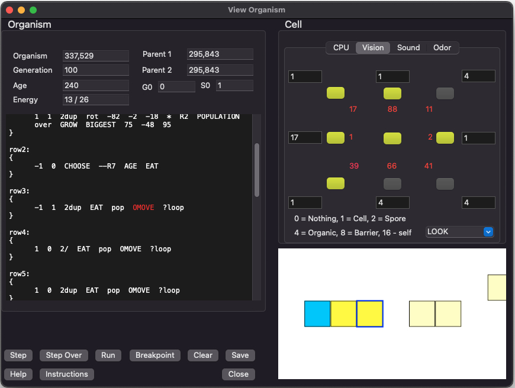

VOLVE 5.0
VOLVE 5.0
Step 1
Ready? Okay, launch the application and this is what you'll see:
Step 2
There's a thing called a menu, and one of them is called 'File' and if you click on it, you'll see what is called a sub-menu which contains several choices. Click on 'New' to create your very first simulation.
Step 3
A Seed value (based on the system timer) has already been filled in. You can specify a value if you are trying to reproduce a simulation.
You can select any width x height you wish (up to a maximum of 3000 units). For this example, we will keep the default 700 x 600. The Oval Barrier option will create a pleasant enclosure for your universe (instead of a basic rectangle).
Choose a strain profile. This gives you good parameters for the energy and population. A good seed program is also selected.
Unless you know how to write KFORTH programs, it will be best to select the default seed program. The seed program is a kforth file which is a text file. You can look at using the "KFORTH Interpreter".
Energy is an important value for controlling the population of your universe. Values between 100,000 to 800,000 will give you a population of about 3,000 - 8,000 organisms. Here we have entered 100,000.
For this introduction we will just specify one strain, but up to eight can be used.
Oh, please note that commas are allowed inside of these edit controls. (Cool eh?)

Step 4
Here is the universe that you created. The circle is the "oval barrier" that was created. The tiny squares in the middle are your first population of 10 organisms.
Step 5
Let's start the simulator. How? Click on the button or use the menu "Start Simulation" (Or press F1).
Step 6
Well, after a few minutes you should see something similar to this. Cool eh? Press to stop the simulation (or press F4). Let's zoom in to get a better look at our universe.
Step 7
To zoom, use your mouse wheel. Or click on the toolbar button  . Keep zooming in until it looks
like this:
. Keep zooming in until it looks
like this:
Step 8
Much nicer. You can actually see individual organisms. You can use your mouse to pan around, by clicking on the left mouse button and dragging the universe around. (The arrow keys also work for panning). Let's zoom in a little more,

Step 9
Use your mouse and click on a yellow (or red) square. These are organisms and the most common task in this simulator is to examine the inner genetics of an organism.
Clicking on an organism "selects" it. If it was a really cool organism, you could cut/copy it and paste it into another simulation window. But we are going to examine it.
Step 10
Using the menu select "VIEW > ORGANISM". Alternatively you could have pressed the  tool bar button. (or pressed F8). You can also just double-click on any organism to view it.
tool bar button. (or pressed F8). You can also just double-click on any organism to view it.
Step 11
This dialog shows everything about the organism. You view its genetic program and various other details about it. Well, I hope you enjoyed this introduction. Congratulations, you have just experienced 70% of the application.
Clicking on the [Vision] tab will display the cells current vision data. Other senses like Sound and Odor can be viewed here too.
This dialog shows the distance and type of thing that is visible in 8 directions surrounding the cell. This is used for debugging organisms that do a lot of LOOK'ing.